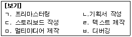
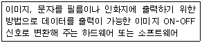
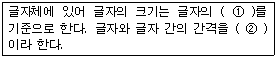

전자출판기능사 (2009-07-12 기출문제)
1과목: 출판론
1. 책의 한 가운데를 실이나 철사로 맨 다음 상면 다듬재단 하는 제책 방식은?
- 양장 제책
- 반양장 제책
- 무선철 제책
- 중철 제책
(정답률: 86%)

2. 평판 인쇄에서 판의 비화선부가 갖추어야 할 성질은?
- 소수성
- 친유성
- 친수성
- 습성 반발성
(정답률: 72%)
3. 볼록판 인쇄에서 강한 압력으로 선이나 망점의 윤곽이 진하게 인쇄되는 현상은?
- 뒤묻음
- 도트게인
- 스커밍
- 마지널존
(정답률: 55%)
4. 어떤 색의 먼셀기호가 5Y 8/13.5 라면 명도를 나타내는 것은?
- 5
- 8
- 5Y
- 13.5
(정답률: 95%)
5. 다음 중 녹색의 파장범위를 옳게 나타낸 것은?
- 467~483mm
- 488~493mm
- 498~530mm
- 573~578mm
(정답률: 87%)
6. ISSN(International Standard Serial Number)에 대한 설명으로 틀린 것은?
- 연속간행물 지명에 부여된다.
- 도서에 포함된 비연속적인 부록이나 특별부록에도 부여된다.
- 권호가 있는 각 개의 총서와 권호가 없는 학술총서에 부여된다.
- 권호가 없는 상업적인 출판사의 총서에는 부여되지 않는다.
(정답률: 75%)
7. 스크린 인쇄판을 노출한 후 현상할 때 판의 비화선부 일부가 벗겨져 나가는 원인으로 가장 거리가 먼 것은?
- 노출 부족
- 노출 과다
- 감광역이 두껍게 도포
- 불량한 감광액의 사용
(정답률: 84%)
8. 평판의 종류 중 화선부의 내쇄력을 증가시키기 위해 화선부를 3~7μm 정도 부식하는 판은?
- PS판
- 평오목판
- 난백판
- 연판
(정답률: 48%)
9. 다음 중 디지털 저작물 식별자 체제를 의미하는 것은?
- ISBN
- DOI
- ISSN
- POS
(정답률: 71%)
10. 색상대비에서 대비효과에 대한 설명으로 옳은 것은?
- 1차색 끼리에서의 대비효과가 가장 크다.
- 2차색 끼리에서의 대비효과가 가장 크다.
- 3차색 끼리에서의 대비효과가 가장 크다.
- 1차색, 2차색, 3차색 모두 대비효과는 동일하다.
(정답률: 71%)
11. 먼셀표색계에서 채도에 대한 설명으로 옳지 않은 것은?
- 번호가 클수록 채도가 높아진다.
- 모든 색상의 가장 높은 채도는 14이다.
- 한 색상 중에서 가장 채도가 높은 색은 순색이다.
- 무채색 축을 0 으로 하고 수평으로 갈수록 번호가 커진다.
(정답률: 66%)
12. 망점의 크기가 같고 깊이가 다른 오목점으로 인쇄물의 농담을 나타내는 것은?
- 덜젠그라비어(dultgen gravure)
- 망점그라비어(halftone gravure)
- 컨벤셔널그라비어(convention gravure)
- 전자조각그라비어(heliograph)
(정답률: 66%)
13. 출판기획 입안시 고려해야 할 사항으로 가장 거리가 먼 것은?
- 유서(類書)를 조사한다.
- 구독층을 조사한다.
- 채산점을 계산한다.
- 정가를 계산한다.
(정답률: 70%)
14. 일반적인 스크린 인쇄의 특징으로 옳은 것은?
- 인쇄된 잉크 피막의 두께가 다른 판식에 비해 얇다.
- 인쇄판면이 유연하다.
- 채산점을 계산한다.
- 정가를 확정한다.
(정답률: 78%)
15. 어떤 소설책을 제작하려고 할 때 일반적으로 권당 단가가 가장 높다고 할 수 있는 것은? (단, 매번 발행 부수와 장정은 동일하다.)
- 초판 1쇄
- 초판 2쇄
- 초판 3쇄
- 초판 4쇄
(정답률: 85%)
16. 양장제책에서 책등의 양 끝에 귀를 만드는 공정은?
- 둥글림
- 배킹
- 등굳힘
- 표지만들기
(정답률: 78%)
17. 인쇄 3형식의 발전 순서로 옳은 것은?
- 평압식 → 윤전식 → 원압식
- 원압식 → 윤전식 → 평압식
- 평압식 → 원압식 → 윤전식
- 윤전식 → 원압식 → 평압식
(정답률: 73%)
18. 제지 공정에 대하여 옳게 나타낸 것은?
- 비팅 → 사이징 → 충전 → 초지 → 코팅 → 윤내기
- 비팅 → 충전 → 코팅 → 사이징 → 초지 → 윤내기
- 초지 → 사이징 → 코팅 → 충전 → 비팅 → 윤내기
- 초지 → 충전 → 비팅 → 사이징 → 코팅 → 윤내기
(정답률: 65%)
19. 다음 중 인쇄물 표면가공의 목적으로 가장 거리가 먼 것은?
- 인쇄지면의 광택증가
- 습기방지
- 잉크의 수용성 증가
- 잉크의 퇴색 방지
(정답률: 78%)
20. 인쇄판 제판 공정에서 카운터에치(counteretch)를 하는 주된 목적은?
- 산화막이나 이물질 제거
- 빛쬠 효율의 증대
- 감광도를 높이기 위해
- 증감효과를 주기 위해
(정답률: 76%)
2과목: 전자 출판
21. 하나의 픽셀이 표현 가능한 색상의 수를 의미하는 해상도는?
- 이미지해상도
- 비트해상도
- 출력해상도
- 프린트해상도
(정답률: 78%)
22. 다음 ( ) 안에 있는 문장 부호의 이름과 사용법이 옳은 것은?
- (:) : 온점 - 서술, 명령, 청유 등을 나타내는 문장에 사용한다.
- (:) : 반점 - 같은 자격의 어구가 열거될 때 사용한다.
- (:) : 가운데점 - 열거된 여러 단위가 대등하거나 밀접한 관계임을 나타낸다.
- (:) : 쌍점 - 내포되는 종류를 들 때에 사용한다.
(정답률: 62%)
23. CD-ROM 책(디스크 책)의 제작과정을 순서에 따라 옳게 나열한 것은?

- ㄹ-ㄴ-ㄷ-ㄱ-ㅁ-ㅂ
- ㄴ-ㄱ-ㄷ-ㅂ-ㄹ-ㅁ
- ㄹ-ㄴ-ㄱ-ㅁ-ㄷ-ㅂ
- ㄴ-ㄷ-ㄹ-ㅁ-ㅂ-ㄱ
(정답률: 89%)
24. 다음 프로그램 중에서 주된 용도가 다른 것은?
- 포토샵
- 문방사우
- 페이지메이커
- 쿽익스프레스
(정답률: 74%)
25. 다음 중 이미지파일 포맷이 아닌 것은?
- PCX
- TIFF
- GIF
- MPEG
(정답률: 80%)
26. 전자출판의 요건으로 가장 거리가 먼 것은?
- 검색기능이 있어야 한다.
- 디지털화된 데이터로 저장되어 있어야 한다.
- 독자들이 내용을 변경하여 재 저장할 수 있어야 한다.
- 등록된 출판사에서 발행되어야 한다.
(정답률: 93%)
27. 전자출판물의 인터페이스(interface)를 설계할 때의 주의사항으로 옳은 것은?
- 복잡하고 다양한 구조를 갖도록 하여 독자에게 많은 내용이 있는 것처럼 보이게 한다.
- 제작자의 관점에서 설계한다.
- 메뉴의 위치나 아이콘 실행 방식은 변화가 많고 다양하게 설계한다.
- 명료한 구조를 갖도록 하며 사용자 입장에서 설계한다.
(정답률: 83%)
28. 다음에서 설명하는 내용과 가장 관련 있는 용어는?

- 현상기
- 립(RIP)
- OPI서버
- 이미지세터
(정답률: 88%)
29. FTP(File Transfer Protocol)에 대한 설명으로 틀린 것은?
- 온라인상에서 파일을 전송하는 프로토콜이다.
- http://123.456.789.12 와 같은 형식으로 입력해야 한다.
- 웹페이지 파일들을 서버로 전송하거나 받을 때 흔히 사용한다.
- 인터넷의 TCP/IP 응용 프로토콜 중의 하나이다.
(정답률: 82%)
30. 다음 중 패키지형 전자출판물에 해당되지 않는 것은?
- DVD
- DTP
- CD-I
- CD-ROM
(정답률: 79%)
31. 글자꼴 코드에 대한 설명으로 잘못된 것은?
- 코드는 숫자 0과 1의 조합으로 나타낸다.
- 한글 코드는 완성형과 조합형이 있다.
- 한글과 영어의 음절은 2바이트로 구성된다.
- 한글 코드는 입력코드, 처리코드, 출력코드가 각각 다르다.
(정답률: 77%)
32. 다음 중 하이퍼링크 기능을 구현할 수 있는 매체는?
- 오프셋인쇄 출판물
- 특수인쇄 출판물
- CD-ROM 출판물
- 비디오테이프
(정답률: 90%)
33. 편집된 모습 전체가 화면에 나타나지 않을 경우 화면을 이동시키면서 부분적으로 확인할 수 있는 기능은?
- 텍스트 박스 생성 툴
- 스크롤바
- 블록 다이어그램
- 팝업
(정답률: 82%)
34. 문자정보나 영상․도형 등의 정보를 각종 기록매체를 사용하여 전자적으로 데이터를 기록한 창조적 저작물로 출판하는 의미의 용어는?
- CTF(Computer To Film)
- DTP(Desk top publishing)
- EP(ElectronType System)
- CTS(Cold Type System)
(정답률: 61%)
35. 전자통신출판의 특성으로 틀린 것은?
- 타 매체에 대한 적응력이 우수하다.
- 신속한 정보 전달과 수정이 가능하다.
- 멀티미디어 정보를 제공할 수 있다.
- 정보의 2차 가공이 어렵다.
(정답률: 92%)
36. 인터넷 하이퍼텍스트 구성은 주로 무엇과 무엇으로 이루어져 있는가?
- HTTP와 HTML
- HTML과 TML
- HTTP와 JPG
- LINK와 NODE
(정답률: 76%)
37. 비트맵이미지를 정교한 아트데이트로 변환시켜주는 프로그램으로 주로 photoshop에서 filter 로 사용되는 것은?
- 갤러리 이펙트(Gallery Effects)
- 프레임메이커(FrameMaker)
- 폰토그라프(Fontographer)
- 프리핸드(Freehand)
(정답률: 90%)
38. 다양한 문서들을 인터넷 상에서 볼 수 있도록 지원하는 텍스트 파일 포맷은?
- HWP
- ASF
- PPT
(정답률: 72%)
39. 평판스캐너에서 이미지를 읽어 들이는 역할을 하는 것은?
- PMT
- SCSI
- CCD
- DTP
(정답률: 79%)
40. 래스터 형식과 벡터 형식 모두에 대응하고 DTP의 표준 그림 형식의 파일 포맷은?
- WAV
- TXT
- DOC
- EPS
(정답률: 87%)
3과목: 전산 편집
41. 많은 양의 본문에서 크기가 지나치게 크거나 작은 글자는 독자들의 눈을 금방 피로하게 하여 싫증을 느끼게 한다. 일반 성인을 대상으로 한 책의 경우 바람직한 본문 글자의 크기는?
- 4~7point
- 9~12point
- 13~24point
- 25~32point
(정답률: 100%)
42. 마진(Margin)과 판면에 대한 설명으로 가장 거리가 먼 것은?
- 마진과 판면은 같은 출판물 한 페이지 내에 글자가 인쇄되어 있는 면을 말한다.
- 판면 안의 글자들은 마진에 의해 통합성을 높이게 된다.
- 책을 읽기 위해 책을 잡은 손이 본문 글자를 가리지 않도록 마진을 두어야 한다.
- 마진은 제책 및 재단 과정 중 글자가 잘려 나가는 것을 방지한다.
(정답률: 81%)
43. 제책 방법 중 실이나 철사로 묶는 대신 책등을 접착제로 접착시키는 방식으로 고성능 화학접착제와 고속 제책기의 급속한 보급으로 많이 사용되고 있는 방식은?
- 양장
- 호부장
- 중철
- 무선철
(정답률: 79%)
44. 다음 서체 중 그 획이 가장 굵은 것은?
- 세명조체
- 중명조체
- 태명조체
- 견출명조체
(정답률: 91%)
45. 판형의 크기 중 문고판형에 대한 설명으로 틀린 것은?
- 국반판형이라고도 한다.
- 크라운판보다 규격이 작다.
- B5판형을 3분하여 만든 판형이다.
- 국전지 32절 크기의 판형이다.
(정답률: 62%)
46. 일반적으로 잡지나 인쇄물의 편집에서 직사각형의 사진이 많이 사용되는 이유로 가장 관련이 없는 것은?
- 사진이 들어갈 수 있는 지면의 크기를 쉽게 계산할 수 없기 때문에
- 축소나 확대가 편리하기 때문에
- 직사각형의 사진형태에 익숙해져 있기 때문에
- 문자의 양에 따라 지면을 쉽게 채울 수 있기 때문에
(정답률: 83%)
47. 다음 ( )안의 ①,②에 들어 갈 적당한 용어는?

- ① 두께 ② 행간
- ① 가로, 세로의 길이 ② 자간
- ① 대각선 길이 ② 자간
- ① 대각선 길이 ② 행간
(정답률: 87%)
48. 책의 구성 요소 중 머리지연(앞붙이)에 속하는 것으로만 나열된 것은?
- 헤드라인, 일러두기, 차례
- 일러두기, 차례, 참고문헌
- 머리말, 차례, 일러두기
- 간기, 머리말, 캡션
(정답률: 88%)
49. 책의 구성 안내나 표기상의 해설이 필요할 때 추가하는 책의 구성요소로서 ‘범례’ 라고도 하는 것은?
- 일러두기
- 헌사
- 간기
- 주
(정답률: 81%)
50. 다음 중 판형에 대한 설명으로 옳지 않은 것은?
- 판형은 크게 표준판형과 변형판형으로 나눈다.
- A4판형은 국전지를 4절 크기로 잘라 만든 판형으로 크기는 148 × 210mm이다.
- B4판형은 타블로이드 판형이라고도 한다.
- B5판형은 4×5배판형이라고도 하며, 크기는 188×257mm 정도이다.
(정답률: 80%)
51. 출력장치 중 고해상도 프린트 방법의 하나로 고체인 염료가 기체로 변화하는 디지털 교정 방식은?
- 잉크제트 프린트
- 버블제트 프린트
- 염료승화형 프린트
- 열전사식 프린트
(정답률: 94%)
52. 책을 디자인할 때 편집 형태의 일관성 또는 변화에 있어 다양한 레이아웃을 위한 기준이 되는 것은?
- 트리밍
- 재단선
- 그리드
- 접지선
(정답률: 89%)
53. 사진 트리밍(trimming)을 할 때 가장 바람직하지 않은 방법은?
- 대각선을 그어서 확대할 때는 더 크게 확대되는 변을, 축소할 때는 덜 축소되는 변을 기준 변으로 하여 확대와 축소 비율을 계산한다.
- 트리밍을 위해서는 사진 원본을 오리거나 떼어 낸 다음 사진 위에 반투명지를 씌워서 축소, 확대될 영역을 펜으로 표시한다.
- 나란히 구성되는 동일한 비중의 사진이 크기가 다를 경우에는 작은 사진을 확대하여 균형을 잡는다.
- 가로 사진과 세로 사진을 효과적으로 구성하기 위해서는 미리 러프 스케치를 제시하는 것이 좋다.
(정답률: 60%)
54. 다음 중 글자꼴에 대한 설명으로 옳은 것은?
- 정체 : 가늘게 만든 모양의 글자체
- 평체 : 네모반듯한 모양(정사각형)의 글자체
- 사체 : 왼쪽이나 오른쪽으로 기울인 모양의 글자체
- 장체 : 아래 위를 좁혀 납작하게 보이는 모양의 글자체
(정답률: 82%)
55. 이미지와 글자를 동시에 구성할 때 가장 효과적인 방법은?
- 배경 이미지가 복잡한 경우 글자를 얹는 방법은 그림자나 테두리 처리를 한다.
- 사진의 배경이 단순하면서 연하면 백발처리나 밝은 색 글자로 처리한다.
- 복잡하거나 어두운 이미지 위에 글자의 테두리를 구성할 때는 가능하면 색 글자에는 먹 테두리를 구성한다.
- 이미지와 글자의 겹침은 배경이미지의 농도를 점층적으로 높여 농도가 진한 부분 위에 글자를 구성한다.
(정답률: 84%)
56. 그림 레이아웃에서 방향성(direction)에 대한 설명으로 옳은 것은?
- 수직적인 구성은 정적인 안정감과 시선을 끄는 힘이 가장 강렬하다.
- 사선 구성은 불안정성과 동적인 분위기, 시선을 끄는 힘이 가장 강렬하다.
- 수평적인 구성은 불안정하며 상승과 하강의 동적인 분위기이다.
- 사선 구성은 안정성과 좌우로의 연장감을 느낄 수 있다.
(정답률: 73%)
57. 책의 구성 요소 중 표지와 본문의 연결을 강하게 하기 위한 것은?
- 책띠
- 면지
- 책등
- 속표지
(정답률: 78%)
58. 발주자의 적법한 발행 행위를 공시하기 위한 목적으로 발행일자, 정가, 출판사 등을 기록한 것은 무엇인가?
- 판권
- 색인
- 후기
- 부록
(정답률: 89%)
59. 다색 원고에 대한 설명으로 가장 옳은 것은?
- 다색 원고는 보통 1색에서 4색까지를 의미한다.
- 보통 4색까지는 기본 가격이고, 1색 추가시마다 제판비가 올라간다.
- 보통 4원색으로 인쇄를 하기 위해서는 컬러 스캐너로 사진 원고를 원색분해하기도 한다.
- 컴퓨터 모니터에서 보는 RGB는 인쇄할 때 인쇄용의 RGB모드로 반드시 출력해야 한다.
(정답률: 59%)
60. 고대 이집트에서 개발되어 필기 재료로서 오늘날의 종이처럼 사용한 것은?
- 죽간
- 금석
- 파피루스
- 양피지
(정답률: 91%)